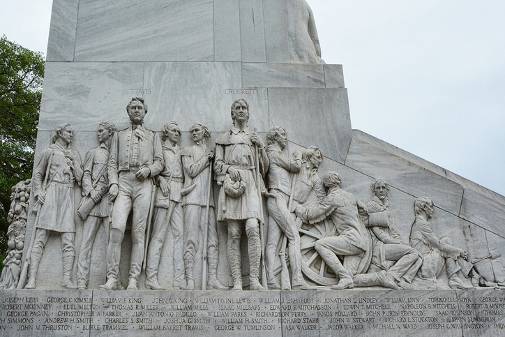
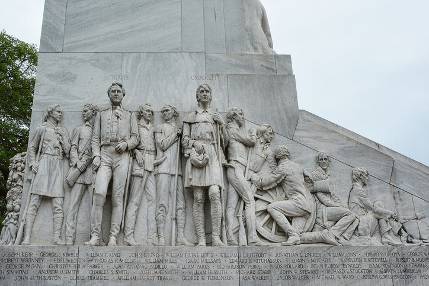

Instituto Técnico Honduras

Batalla del Álamo
Hola aqui encontraras informacion sobre el acontesimiento historico "La Batalla del Alamo"
 

Resumen
La batalla de El Álamo (23 de febrero-6 de marzo de 1836) fue un conflicto militar en la Revolución de Texas que consistió en un asedio de 13 días de duración, desde su inicio el 23 de febrero hasta el asalto final del 6 de marzo de 1836. Enfrentó al ejército de México, encabezado por el presidente Antonio López de Santa Anna, contra una milicia de secesionistas texanos, en su mayoría inmigrantes esclavistas estadounidenses, en San Antonio de Béxar, en la entonces provincia mexicana de Coahuila y Texas (hoy estado de Texas, Estados Unidos).La batalla de El Álamo (23 de febrero-6 de marzo de 1836) fue un conflicto militar en la Revolución de Texas que consistió en un asedio de 13 días de duración, desde su inicio el 23 de febrero hasta el asalto final del 6 de marzo de 1836. Enfrentó al ejército de México, encabezado por el presidente Antonio López de Santa Anna, contra una milicia de secesionistas texanos, en su mayoría inmigrantes esclavistas estadounidenses, en San Antonio de Béxar, en la entonces provincia mexicana de Coahuila y Texas (hoy estado de Texas, Estados Unidos).
Para saber mas ve al menu principal/Historia
| Aspecto | Ejercito Mexicano | Defensas Texanas |
|---|---|---|
| lideres | Antonio Lopez de santa Anna | William Travis, James Bowie, Davy Crockett |
| Estrategia | Ataque masivo al Fuerte | Defensa del fuerte con recusos limititados |
| Resultado | Victoria Mexicana | Derrota total (todos murieron) |
| Impacto | Fortalecio el control Mexicano temporal | Inspiro a Texas a luchar por la independencia |